Deva's Awesome Adventures
Manuale per i genitori · versione 1.0.0 · ottobre 2026
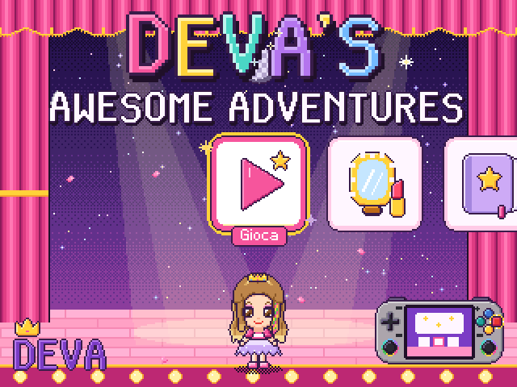
- Un gioco educativo per bambini di cinque anni, in italiano e tutto a voce: non serve saper leggere.
- Diciotto giochi (numeri, monete, misure, parole, lettere, forme, ombre, sequenze, ritmo, memoria, posizioni, emozioni, ballo, ginnastica, trucchi, primo coding) con livelli da 1 a 5 che si adattano da soli.
- Quattro avventure con la mappa e i mostri stregati da far tornare buoni; camerino, album, tre profili.
- Gira in RetroArch come «core senza contenuto» (niente ROM da cercare): console Linux arm64 come la XiFan RF35H, oppure PC Linux.
- Niente internet, pubblicità, acquisti o dati inviati: tutto resta sulla console.
- Sessioni di 15 minuti (si cambia), poi Deva va a nanna e il gioco si chiude. Le porte per i grandi si aprono solo tenendo premuti L e R.
1. Installare
| Pacchetto | Per |
|---|---|
deva-adventures-1.0.0-aarch64.zip | console Linux a 64 bit ARM con RetroArch (RK3326 come la XiFan RF35H, e le altre arm64) |
deva-adventures-1.0.0-x86_64.zip | PC Linux con RetroArch |
deva-adventures-1.0.0-src.tar.gz | i sorgenti: per l'immagine di devaOS o di Lakka, per altre architetture, per chi vuole modificarlo |
Servono RetroArch su Linux con la libreria C glibc 2.17 o più nuova (tutte le distribuzioni dal 2014 in poi; con
musl il core va compilato dai sorgenti) e circa 17 MB liberi. Prima di copiarli, sul computer, controllate che i
pacchetti siano arrivati interi: sha256sum -c SHA256SUMS nella cartella dove li avete scaricati.
Con lo script di installazione (consigliato)
Copiate lo zip sulla console, poi da un terminale (SSH) o, per il pacchetto x86_64, dal terminale del PC:
unzip deva-adventures-1.0.0-aarch64.zip cd deva-adventures-1.0.0-aarch64 sh install.sh --dry-run # mostra le cartelle e che cosa farebbe, senza toccare niente sh install.sh # installa, dopo aver chiesto conferma
Lo script, in quest'ordine:
- trova
retroarch.cfg(nella cartella di configurazione dell'utente, poi nei percorsi di Lakka e ArkOS) e ne legge le cartelle dei core, delle info, di sistema e dei salvataggi; - verifica il pacchetto con le impronte di
SHA256SUMS; - mostra le cartelle e chiede conferma; avvisa se una cartella sta in RAM e si svuoterebbe al riavvio;
- mette da parte quello che c'è già (core, scheda
.info, dati con le vostre impostazioni, salvataggi) in<cartella di sistema>/deva_adventures_backup/<data-ora>/; - prepara i dati nuovi accanto ai vecchi, completi, e solo allora li mette al loro posto; core e
.infosono copiati accanto e poi rinominati, così non resta mai un core a metà; - tiene le vostre impostazioni: se avevate cambiato
deva_adventures.cfgresta il vostro, e quello nuovo di serie va indeva_adventures.cfg.default; - ricontrolla i file copiati con le impronte del pacchetto e scrive
INSTALLATO.txtnella cartella dei dati (che cosa, dove, quando, dove sono i salvataggi).
Se qualcosa si interrompe a metà, rimette tutto com'era. I salvataggi non vengono mai toccati: sono solo copiati nella copia di sicurezza.
| Opzione | Che cosa fa |
|---|---|
--dry-run | mostra soltanto |
--yes | senza domande (anche da uno script) |
--cfg FILE | usa un altro retroarch.cfg |
--cores DIR --info DIR --system DIR --saves DIR | le cartelle date a mano |
--list-backups, --restore DIR | le copie di sicurezza; rimettere una copia (capitolo 12) |
--uninstall oppure sh uninstall.sh | togliere il gioco (capitolo 12) |
A mano
Con la scheda nel computer, tre copie nelle cartelle che RetroArch mostra in Impostazioni → Cartella (Settings → Directory):
| Dal pacchetto | Nella cartella di RetroArch |
|---|---|
cores/deva_adventures_libretro.so | Nuclei (Cores) |
info/deva_adventures_libretro.info | Informazione sul Core (Core Info), spesso la stessa dei core |
system/deva_adventures/ (la cartella intera) | Sistema/BIOS (System/BIOS): deve diventare <sistema>/deva_adventures/ |
Aggiornando a mano, tenete da parte il vostro deva_adventures.cfg se lo avevate cambiato.
Nell'immagine di devaOS o di Lakka
- devaOS (Buildroot): nei sorgenti,
packaging/buildrootè un br2-external pronto.make BR2_EXTERNAL=/percorso/deva-adventures/packaging/buildroot menuconfig, poi External options → deva-adventures. Core in/usr/lib/libretro, dati in/usr/share/deva_adventures. - Lakka:
packaging/lakka/README.mdnei sorgenti. Su un Lakka già installato basta il pacchetto aarch64 coninstall.sh.
Il core cerca i dati prima in <sistema>/deva_adventures e poi in
/usr/share/deva_adventures: una cartella messa nella cartella di sistema vince su quella dell'immagine.
Avviare
Riavviate RetroArch (legge le schede dei core all'avvio), poi nel menu principale Contentless Cores
(Nuclei senza contenuto con i menu in italiano) → Deva's Awesome Adventures. In alternativa:
Load Core (Carica Core) → Deva's Awesome Adventures → Start Core (Avvia Core). Su un PC
anche: retroarch -L /percorso/deva_adventures_libretro.so.
2. Prima di darle la console
- Il volume: provatelo voi, la voce deve arrivare chiara. Il gioco ha tre volumi suoi (voce, musica, effetti) nelle Opzioni.
- Il tempo: 15 minuti di serie (
sessione_minuti), giusti per le prime volte. - Il nome:
nome = DEVAindeva_adventures.cfgè il nome del primo profilo, quello che scrive nel gioco «Il mio nome». Per un altro bambino cambiatelo, o fategli un profilo suo (capitolo 7). - Le scorciatoie di RetroArch: il gioco usa L+R tenuti (le porte dei grandi) e START o SELECT tenuti (la pausa). In Impostazioni → Input → Scorciatoie (Settings → Input → Hotkeys) controllate le combinazioni Attiva/Disattiva Menu (Controller Combo) ed Esci (Controller Combo): non devono essere «L1 + R1», «Mantieni Start», «Mantieni Select» o «Start + Select». Per il menu va bene «Giù + Y + L1 + R1», difficile da premere per caso; per l'uscita «Nessuno», oppure tenete attivo Conferma Esci.
- Se volete che lei non possa cambiare niente in RetroArch:
kiosk_mode_enable = "true"inretroarch.cfgnasconde le impostazioni dal menu. - La batteria carica. Se la console si spegne di colpo i salvataggi reggono (capitolo 9).
3. Come si gioca
La voce dice tutto: che cosa fare, quale bottone premere, se la risposta è giusta. I bottoni sono nominati per colore, come sulla RF35H.
| Tasto | Che cosa fa |
|---|---|
| croce | scegliere una carta; le frecce nel ballo, nella ginnastica e nel sentiero |
| A bottone rosso | confermare, rispondere |
| B bottone giallo | risentire la domanda, rivedere il ballo; indietro nelle pagine |
| Y verde, X blu | Y fa risentire come B (nel sentiero solo Y: lì B toglie una freccia); X e Y servono ai grandi nei Salvataggi |
| START o SELECT tenuti | la pausa (da soli, per un attimo) |
| L + R tenuti | per i grandi: 2 secondi aprono Opzioni, Salvataggi, Esci; 1 secondo salta una frase di un racconto |
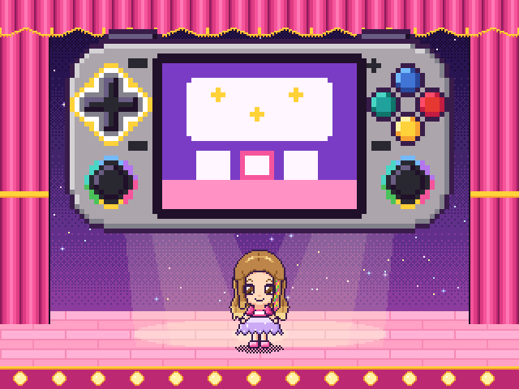
- La prima volta: nelle prime tre sessioni, prima del menu, una console grande sullo schermo chiede di premere la croce (Deva balla il passo) e poi il bottone rosso.
- Il menu dei giochi è un carosello di carte (croce a sinistra e a destra): sotto ogni carta cinque stelline mostrano il livello raggiunto; l'ultima carta, «?», è il prossimo gioco che si aprirà. I primi quattro giochi sono aperti da subito, poi se ne apre uno ogni due round completati.
- Un round sono 5 domande, una stellina ciascuna; poi il premio nel camerino.
- Prima ascolta, poi rispondi: in una domanda nuova il rosso risponde solo quando la domanda è stata detta (al massimo 2,5 secondi); la croce si muove subito. Schiacciare il rosso a ripetizione non serve.
- Se sbaglia la carta si spegne e la voce dice di riprovare. Dopo il secondo errore parte l'aiuto guidato: il gioco mostra la strada (contiamo insieme, battiamo le sillabe, il posto giusto che brilla) e la risposta arriva insieme. Nessun punteggio negativo.
- I livelli, da 1 a 5 per ogni gioco: si sale dopo tre risposte giuste al primo colpo, si scende dopo una risposta arrivata con l'aiuto guidato.
- Se non fa niente, dopo 12 secondi la voce ricorda che cosa fare, poi dopo il doppio e il quadruplo, poi tace fino al tasto successivo.
- La fine: due minuti e mezzo prima il menu dice «Ancora un gioco, e poi la nanna!»; finito il tempo, al primo ritorno al menu Deva saluta, va a nanna e il gioco si chiude.
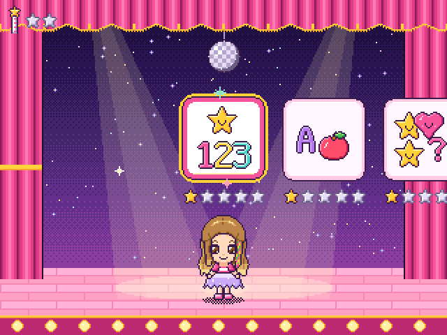
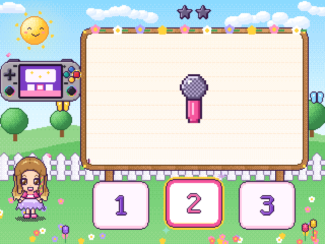
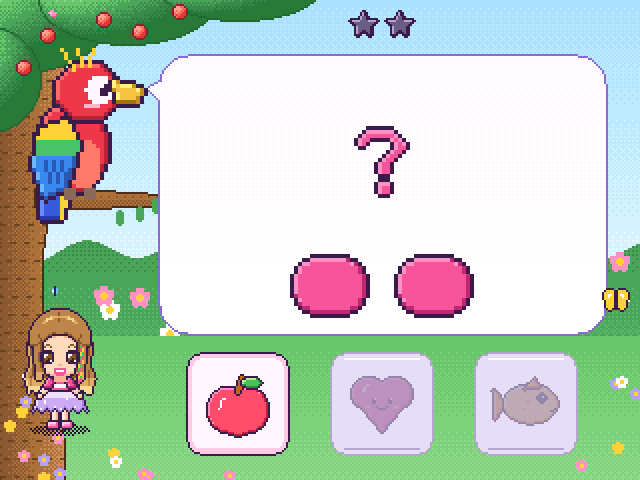
4. I diciotto giochi
Il nome è quello che dice la voce. I primi quattro sono aperti da subito; gli altri si aprono in quest'ordine: Il mio nome, Ginnastica, Memory, Facciamo belli i mostri, Le ombre, Batti il ritmo, Le lettere, Il negozio, Forme e colori, Sopra e sotto, Il sentiero, Le misure, Le emozioni, La storia in ordine.
| Gioco | Che cosa allena | Come cresce, dal livello 1 al 5 |
|---|---|---|
| I numeri (Conta) | contare fino a 20, confrontare, prima e dopo, sommare | da 1–5 oggetti → «dove ce ne sono di più?», la linea dei numeri, «quanti insieme?» |
| Le parole | ascoltare i suoni delle parole (prima della lettura) | fondere le sillabe → contarle → le rime → la sillaba iniziale → la vocale iniziale |
| Che cosa viene dopo? (Sequenze) | logica, regolarità | AB → AAB, ABB → ABC, AABB → «che cosa manca?» |
| Balla con me | memoria di lavoro, destra e sinistra | 2–4 passi da guardare → 3–4 passi a memoria |
| Il mio nome | riconoscere le lettere | il nome con il modello → parole brevi → lettere simili (E/F, M/N) → senza modello |
| Il memory | memoria visiva, attenzione | da 3×2 a 4×4 carte, trucchi simili ai livelli alti |
| Batti il ritmo | ascolto, ritmo | 3–4 battiti regolari → 5–6 battiti con le pause |
| Sopra e sotto | concetti spaziali, parole | sopra e sotto → dentro e fuori → destra e sinistra |
| Le emozioni | riconoscere come ci si sente | la faccia di Deva (da 3 a 5 emozioni) → piccole storie |
| La storia in ordine | prima e dopo, il tempo | «che cosa succede dopo?» → prima e poi → «come finisce?» |
| Facciamo ginnastica! | fermarsi al numero giusto, istruzioni in più parti | 1–3 salti → una mossa più volte → due mosse → due e poi tre a memoria |
| Facciamo belli i mostri | colori e nomi delle cose, ricordare due o tre richieste | un trucco disegnato nel fumetto → il colore va ascoltato → due trucchi → tre, senza fumetto |
| Forme e colori | forme, colori, due caratteristiche insieme, «non» | la forma → il colore → tutte e due → sei forme e sette colori → «qual è diverso?», «quale non è rosso?» |
| Le lettere | la prima lettera di una parola, dal suono al segno | le vocali → le consonanti che si cantano (M, S, L…) → tutte → dalla lettera alla figura → lettere che si somigliano |
| Le ombre | osservare forme e contorni | ombre molto diverse → ombre che si somigliano → dalla cosa all'ombra → un pezzo d'ombra coperto |
| Il sentiero | primo coding: una fila di istruzioni, trovare l'errore | dritto, con le impronte → dietro l'angolo → rocce, senza impronte → prima il fiore e poi la stella → strade lunghe |
| Il negozio | contare e pagare, il valore delle monete | monete da 1 → «quanto fanno?» → la moneta d'argento da 2 → quella d'oro da 5 → prezzi fino a 15 |
| Le misure | grande, lungo, alto, pieno, pesante; mettere in fila | misure molto diverse → anche il contrario → le bilance a molla → misure vicine → «mettiamoli in fila!» |
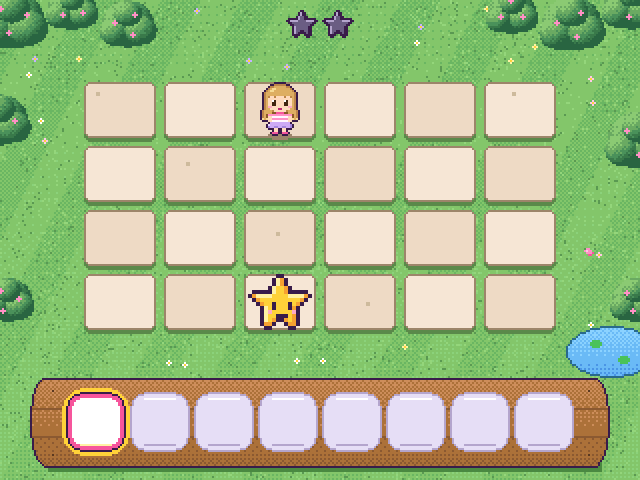
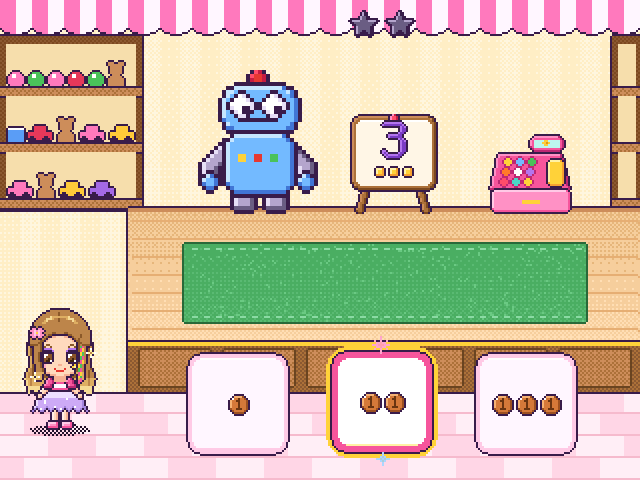
5. Le quattro avventure
Quando si preme Gioca si arriva alla mappa. Ogni round giocato carica la bacchetta magica di
Deva (2 round di serie, round_per_sfida); con la bacchetta carica, Deva va dal mostro successivo e lo sfida.
La sfida usa le domande dei giochi di quel luogo, fra quelli già aperti: ogni risposta giusta fa
scoppiare una bolla magica e,
scoppiate tutte, l'incantesimo si rompe, il mostro torna buono e restituisce il tesoro, il suo luogo riprende colore.
Il cattivo di ogni avventura non è cattivo davvero: è triste, ha paura, è stanco o si sente solo. L'ultima domanda della sfida è «come si sente?», e il finale lo fa lei, con un gesto gentile che non si può sbagliare (se non preme niente, dopo 6 secondi la voce lo ricorda e poi il gesto va avanti da solo). Un pizzico di brivido (ruggiti, tuoni, il castello al buio) e sempre il lieto fine.
| Avventura | Chi la combina | I tesori | Il gesto gentile |
|---|---|---|---|
| 1. L'incantesimo grigio | la Strega Grisella | cinque gemme dei colori | nessuno la invita mai alle feste: Deva la invita a ballare (quattro passi con la croce) |
| 2. La notte senza stelle | lo Stregone Mezzanotte | le stelle del cielo | ha paura del buio: una lanterna magica (tre volte il rosso) |
| 3. La musica perduta | l'Orco Brontolone | cinque note magiche | non riesce mai a dormire: la ninna nanna, una nota alla volta |
| 4. I giocattoli del Re Capriccio | il piccolo Re Capriccio | le chiavi della carica | vuole tutto per sé perché nessuno gioca con lui: il gioco a turno con la palla |
Ogni avventura comincia la sessione dopo la fine della precedente; il cattivo diventato buono fa da guida in quella
dopo. Dopo la quarta c'è una festa a sorpresa del Mago Pistacchio con tutti gli amici. Le avventure finite si
rivedono dall'album (inizio e fine), senza cambiare i progressi. Con storia = 0 le avventure
si spengono e Gioca porta direttamente al menu dei giochi.
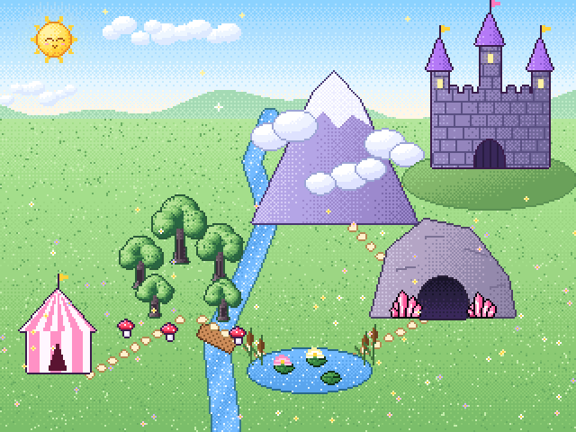
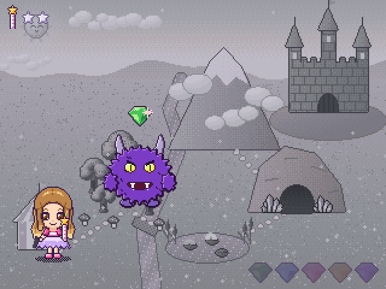
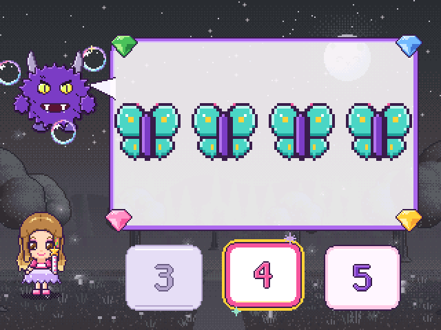
6. Premi, camerino e album
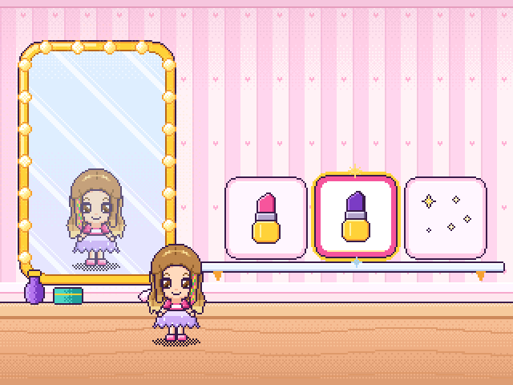
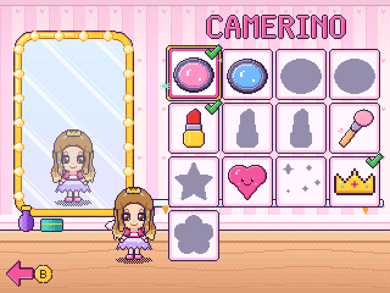
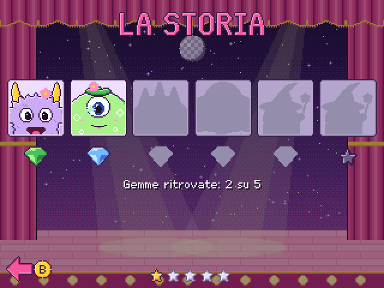
- Il premio: alla fine di ogni round si sceglie un trucco fra tre (ombretti, rossetti, guance, brillantini, coroncine…) e Deva lo indossa. Quando li ha vinti tutti, il premio diventa un adesivo per l'album.
- Il camerino (dal menu principale): tutti i trucchi vinti; il rosso li mette e li toglie, lo specchio mostra Deva. Quelli ancora da vincere sono sagome scure.
- L'album (dal menu principale), da sfogliare con la croce: una pagina per avventura con gli amici liberati e i tesori (il rosso fa rivedere un'avventura finita), le stelline di livello dei giochi, i trucchi, gli adesivi, le stelle e il tempo di gioco.
7. Per i grandi
Nel menu principale le carte Salvataggi, Opzioni ed Esci hanno il lucchetto: si aprono tenendo premuti L e R insieme per 2 secondi (un giro di stelline si riempie). Se lei preme il rosso su una di queste carte, la voce dice «Questo è per mamma e papà!» e sotto compare il gesto. Il tempo passato qui non conta nel tempo di gioco.
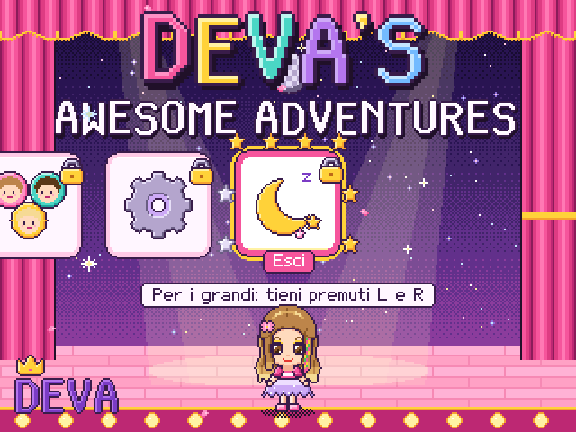
Opzioni
Su e giù per scegliere, sinistra e destra per cambiare; i volumi si sentono subito. Si salva uscendo con B. Le opzioni valgono sopra il file delle impostazioni (capitolo 8).
- volume di musica, voce ed effetti; vibrazione; animazioni;
- tempo di gioco (da 5 a 120 minuti, o senza limite), domande per round (1–10);
- avventure sì o no, round per caricare la bacchetta (1–5);
- giochi nuovi uno alla volta o tutti subito, round per aprirne uno (1–20);
- livello iniziale di Conta (per i profili nuovi);
- Livelli dei giochi: il livello di ogni gioco, da cambiare a mano;
- Progressi: per ogni gioco livello, round, domande e risposte giuste al primo colpo; sessioni, stelle, tempo, avventure, trucchi;
- Crediti (con la versione); Ripristina le opzioni (tenere premuto A 2 secondi).
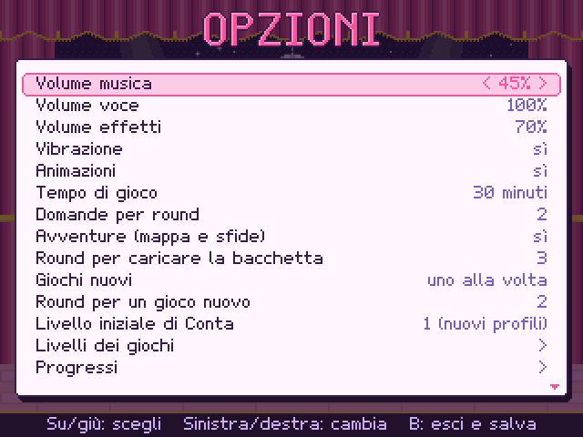
Salvataggi e profili
Tre profili, ognuno con la sua mini-Deva truccata come l'ha lasciata quel bambino, il nome, i tesori, le stelle e l'ultima partita.
- A: gioca con il profilo evidenziato.
- A tenuto 2 secondi su una carta vuota: profilo nuovo; il nome si scrive con una tastiera di lettere grandi (ogni lettera dice il suo nome, al massimo 10).
- X tenuto 2 secondi: cambia il nome.
- Y, poi X e Y tenuti insieme 2 secondi: cancella. Il profilo in uso invece riparte da
zero con lo stesso nome. L'ultimo profilo cancellato resta come
.bak(capitolo 9).
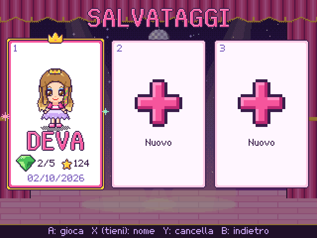
Pausa ed Esci
La pausa si apre tenendo premuto START o SELECT da solo per un attimo (un segno di pausa si riempie di stelline in alto a destra): un tocco, o tutti i tasti stretti insieme, non la aprono. Il gioco resta fermo sotto il pannello: Continua, Torna ai giochi (o alla mappa), Menu principale. B o START continuano; la voce riprende un attimo prima della parola in cui si era fermata.
Esci chiede «Vuoi andare a fare la nanna?»: la luna chiude il gioco con la buonanotte, l'altra carta torna a giocare.
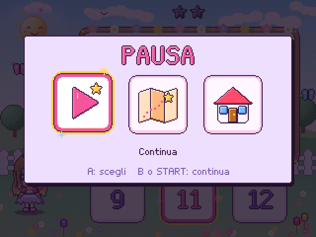
8. Le impostazioni
Il file deva_adventures.cfg sta nella cartella dei dati (<sistema>/deva_adventures/): si apre
con qualsiasi editor di testo, le righe con # sono commenti, le modifiche valgono al prossimo avvio del gioco.
Le Opzioni cambiate dentro il gioco finiscono invece in deva_adventures_opzioni.cfg, nella cartella dei
salvataggi, e valgono sopra questo file: se una modifica al .cfg non ha effetto, è perché nel
gioco quell'opzione è stata cambiata (Ripristina le opzioni le toglie tutte).
| Riga | Di serie | Che cosa fa |
|---|---|---|
sessione_minuti | 15 | minuti di gioco per sessione (0 = senza limite; pausa, opzioni e salvataggi non contano) |
livello_iniziale | 2 | il livello di Conta alla prima partita di un profilo (1: da 1 a 5 oggetti … 5: da 12 a 20) |
domande_per_round | 5 | domande prima del premio (1–10) |
volume_voce, volume_musica, volume_effetti | 100, 45, 70 | i volumi, da 0 a 100 |
vibrazione | 1 | vibrazione a ogni risposta giusta (se la console ce l'ha) |
animazioni | 1 | transizioni e sfondi animati; 0 = sfondi fermi e cambi di scena immediati |
nome | DEVA | il nome del primo profilo (lettere A–Z, al massimo 10) |
sblocco_giochi | 1 | 1 = giochi nuovi uno alla volta, 0 = tutti aperti da subito |
round_per_sblocco | 2 | round completati per aprire il gioco successivo (1–20) |
storia | 1 | 1 = le avventure con la mappa, 0 = solo il menu dei giochi |
round_per_sfida | 2 | round che caricano la bacchetta prima di una sfida (1–5) |
Ricominciare le avventure da capo senza perdere giochi e premi: nel salvataggio
deva_adventures.sav cancellate le righe avventura, capitolo, carica,
racconti ed epilogo, ma lasciate l'ultima riga, # fine: senza, il gioco crede il file rovinato da uno
spegnimento e riprende la copia precedente. Per ricominciare tutto: Salvataggi → Y sul profilo.
9. I file del gioco e gli spegnimenti
Il gioco scrive nella cartella dei salvataggi di RetroArch (Impostazioni → Cartella → Salva File). Se in
RetroArch è attivo l'ordinamento dei salvataggi in cartelle per nome del core (Sort Saves into Folders by Core
Name), sono nella sottocartella Deva's Awesome Adventures; se RetroArch non ha una cartella dei
salvataggi, nella cartella di sistema. INSTALLATO.txt, nella cartella dei dati, dice dove li ha trovati lo
script.
| File | Che cos'è |
|---|---|
deva_adventures.sav, deva_adventures_2.sav, _3.sav | i tre profili, in testo
leggibile: nome, livelli, giochi aperti, trucchi, punto delle avventure, statistiche; l'ultima riga è # fine |
….prev, ….rotto | la versione precedente di un file; un file trovato rovinato all'avvio |
….bak | l'ultimo profilo cancellato, con il suo log e il suo diario: rinominato senza .bak torna |
deva_adventures_opzioni.cfg | le opzioni cambiate nel gioco e il profilo in uso |
deva_adventures_log.csv (_2_log, _3_log) | una riga per risposta: data, sessione, gioco, livello, domanda, risposta giusta, scelta, esito, tentativo (3 = con l'aiuto guidato), secondi per rispondere, riascolti, secondo della sessione |
deva_adventures_diario.csv (_2_diario, …) | una riga per evento: inizio, ogni scena, pause, promemoria, cambio di profilo, chiusura |
I .csv hanno il punto e virgola come separatore e si aprono con un foglio di calcolo.
Se la console si spegne mentre salva. Ogni salvataggio è scritto in un file a parte,
chiuso dalla riga # fine e forzato sulla scheda; solo allora prende il nome giusto, e la versione di prima
resta come .prev. All'avvio, un file mancante, a metà o con un buco di zeri lascia il posto alla copia intera
più recente: si perde al massimo l'ultimo round, mai il profilo. Log e diario si allungano una riga alla volta: uno
spegnimento può troncare al massimo l'ultima riga, che il resoconto salta.
10. La prima prova
Il pacchetto contiene docs/scheda_osservazione.pdf: una pagina di guida per chi guarda (prima, durante,
dopo) e una scheda da stampare per ogni sessione. Lo scopo non è vedere se è brava, ma dove il gioco non si fa capire.
- Stampate la guida una volta e la scheda una volta per sessione. Per la prima volta bastano i 15 minuti di serie.
- Lei gioca, voi guardate e annotate senza aiutare: dopo due errori il gioco mostra da sé la strada.
- Copiate sul computer, dalla cartella dei salvataggi, i file
deva_adventures*.csvedeva_adventures*.sav, poi dalla cartella del pacchetto (serve Python 3, nient'altro):
python3 tools/report/report.py /percorso/dei/file/copiati -o report.html
report.html si apre con qualsiasi browser, anche sul telefono: per ogni gioco le risposte giuste al primo
colpo, l'aiuto guidato, il tempo per rispondere, il livello da dove a dove e i riascolti; sessione per sessione la durata,
dove è andato il tempo, le pause e come è finita (buonanotte, chiusa, o interrotta: console spenta?); le domande sbagliate
più spesso. Sono indizi da leggere accanto alla scheda. Con --text stampa anche un riassunto per giochi
sul terminale.
Se la console non ha l'orologio con la batteria, le date possono essere sbagliate; i tempi no.
11. Problemi e soluzioni
| Che cosa succede | Che cosa fare |
|---|---|
| Il gioco non compare fra i Contentless Cores | Riavviate RetroArch. Controllate che
deva_adventures_libretro.info sia nella cartella delle info. Se manca proprio la voce Contentless
Cores: Impostazioni → Interfaccia Utente → Visibilità delle voci del Menu → Mostra 'Nuclei senza Contenuti'.
In ogni caso funziona Load Core → Start Core. |
| RetroArch non riesce ad avviarlo | Quasi sempre mancano i dati: la cartella deva_adventures deve
stare dentro la cartella di sistema (nel log di RetroArch: graphics missing: copy the 'deva_adventures' folder
into …). Altrimenti il core non è per quella macchina (aarch64 o x86_64) o il sistema non ha glibc: compilatelo dai
sorgenti. |
| Niente voce né suoni | I volumi del gioco (Opzioni) e quelli di RetroArch. Nel log: no audio found
vuol dire che nella cartella dei dati mancano voce, sfx o musica. |
| L+R o START tenuto aprono il menu di RetroArch | È una scorciatoia di RetroArch: cambiatela (capitolo 2). |
| Una combinazione di tasti chiude il gioco | Anche questa è una scorciatoia di RetroArch (Esci, o il tasto Attiva Scorciatoia del sistema): capitolo 2. |
| Va a scatti | animazioni = 0; in RetroArch togliete filtri e shader pesanti. |
Una modifica al .cfg non fa niente | Riavviate il gioco; se ancora niente, l'opzione è stata cambiata dentro il gioco: Opzioni, oppure Ripristina le opzioni. |
| Il profilo è tornato indietro di un round | È il ripristino dopo uno spegnimento proprio mentre salvava; il
file rovinato resta come .rotto. |
| Non trovo i salvataggi | INSTALLATO.txt nella cartella dei dati; poi il capitolo 9. |
| Le date del resoconto sono sbagliate | La console non ha l'orologio con la batteria: i tempi sono giusti. |
Il log di RetroArch: Impostazioni → Registro log (Logging), con Log su file.
Le righe del gioco contengono [deva].
12. Aggiornare, tornare indietro, togliere
- Aggiornare:
sh install.shdal pacchetto nuovo. Salvataggi e impostazioni restano; la versione di prima va nella copia di sicurezza. - Tornare alla versione di prima:
# le copie di sicurezza fatte finora sh install.sh --list-backups # rimette core, scheda .info e dati di quella copia sh install.sh --restore /percorso/della/copia # ... e anche i salvataggi di allora sh install.sh --restore /percorso/della/copia --with-saves
- Togliere il gioco:
sh uninstall.shtoglie core,.infoe dati; salvataggi e copie di sicurezza restano. Per togliere anche quelli: i filedeva_adventures*della cartella dei salvataggi e la cartelladeva_adventures_backupin quella di sistema.
13. Licenze e crediti
- Il codice del gioco è sotto licenza MIT (
LICENSE). Usalibretro.h(MIT),stb_imageestb_vorbis(pubblico dominio o MIT): dettagli inTHIRD_PARTY.md. - Disegni, musiche, effetti, storie e personaggi sono originali, generati dagli script del progetto: nessun personaggio, marchio o brano di altri.
- La voce è sintetizzata offline con il modello Piper it_IT paola. Per l'uso in famiglia non ci sono problemi;
il modello però deriva da uno addestrato su dati con licenza di sola ricerca, quindi prima di pubblicare
il gioco conviene sostituire la voce, registrandola o rigenerandola con un modello libero (
THIRD_PARTY.md). - Le novità di ogni versione sono in
CHANGELOG.md; come compilarlo, provarlo e modificarlo, indocs/SVILUPPO.mddei sorgenti.